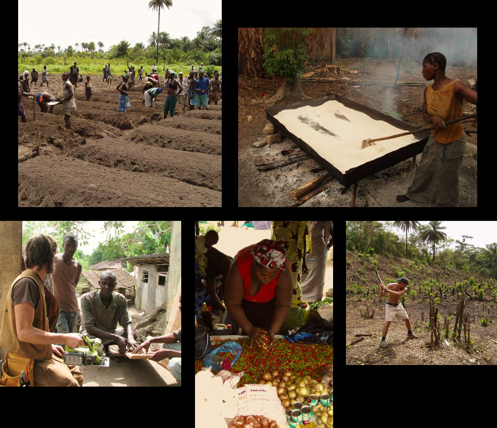
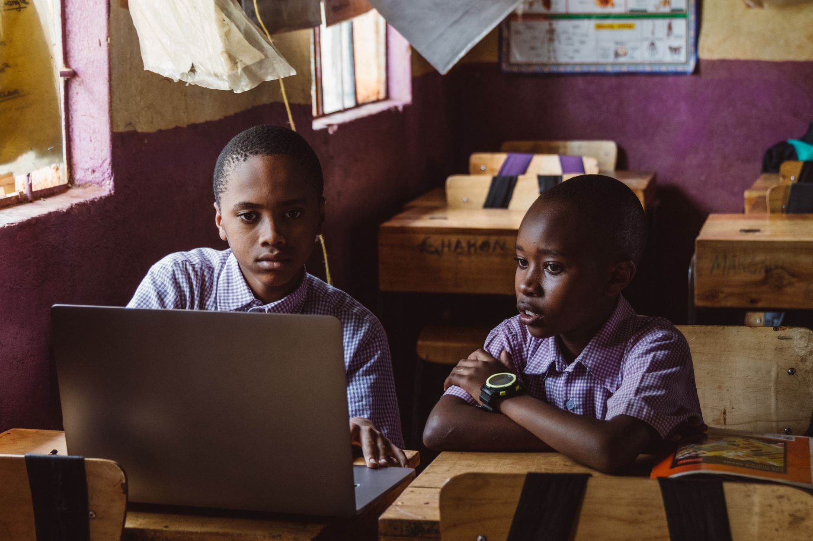
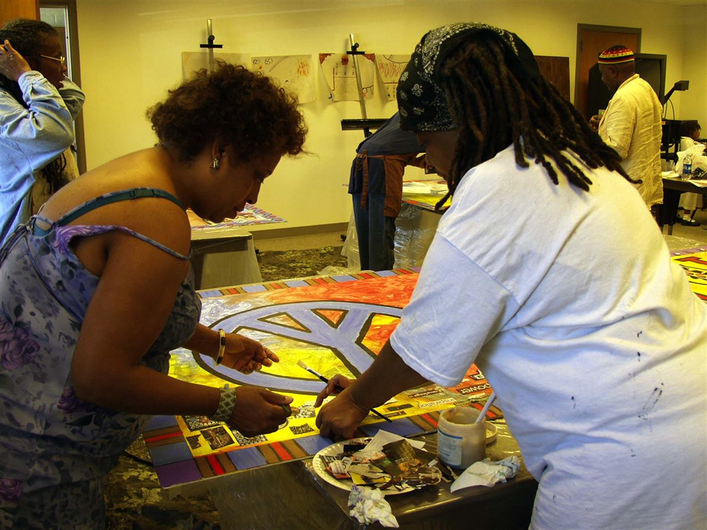
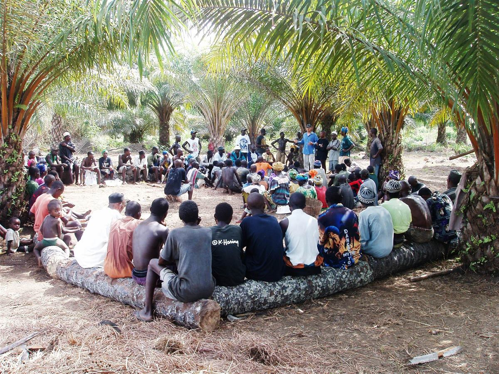
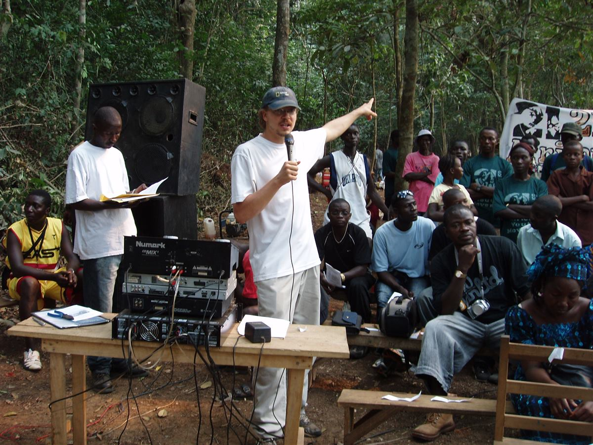
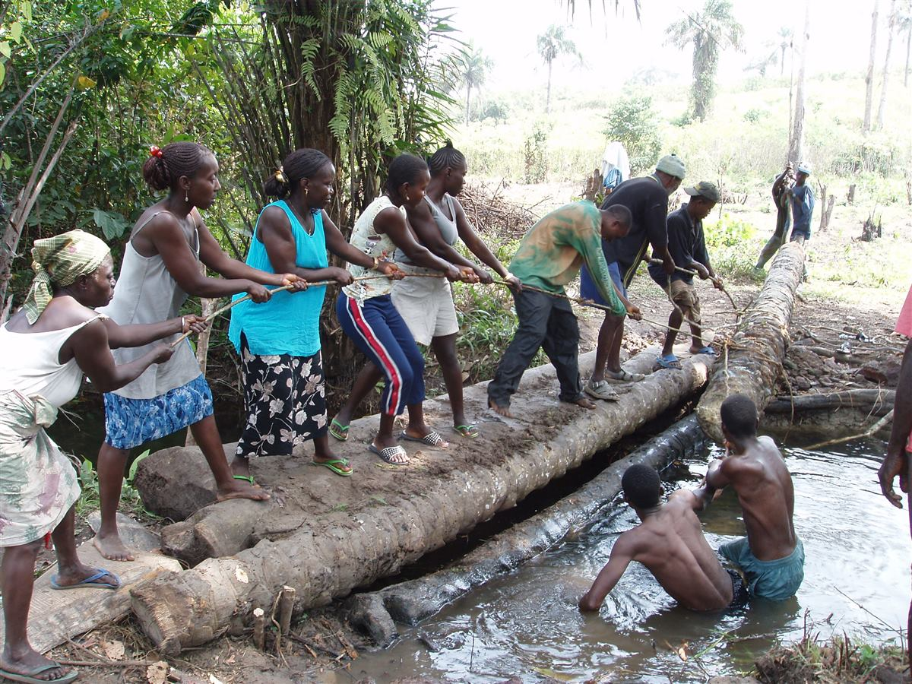

Bridge the Gap Between School & Success
A 1-year immersive placement for school leavers to work alongside AYM leadership, build real-world experience, and launch their careers.
Step Into Leadership From Day One
The AYM Youth Fellowship is designed for young people finishing school who are ready to work—but who need experience, mentorship, and a foothold. You won't fetch coffee: you'll own real projects.
Apply if you are a:
- Recent secondary school leaver ready to learn by doing.
- Self-starter who wants real responsibility, fast.
- Young person eager to build a career in Africa's growing economy.

Opens doors

Direct Mentorship
Work alongside AYM leadership and experienced professionals.


Verified Work Experience
Build a portfolio and a reference you can prove.

Career Pathways
Exceptional fellows are retained as staff or referred to our partner network.
Tech & Digital Operations
Support websites, data, and digital campaigns across the organisation.
Agribusiness & Sustainability
Work in the field on short-duration crops and livestock enterprises.
Project Management & Admin
Coordinate projects, budgets, and reporting.
Ecotourism & Community Development
Help develop sustainable travel and community programs.
Your fellowship year
Orientation & Shadowing
Learn the mission, systems and teams.
Core Execution
Own your first real deliverables.
Leadership & Mentoring
Lead a project and mentor newer fellows.
Career Transition
Graduate with a portfolio and references.
Frequently asked questions
Who is eligible?
Recent secondary school leavers ready for a one-year, full-time commitment.
What will I work on?
One of four tracks: Tech & Digital, Agribusiness, Project Management, or Ecotourism.
Is it remote?
Tracks combine on-site work in Sierra Leone with online collaboration.
What happens at the end?
You graduate with a formal reference, a portfolio, and career-pathway support.